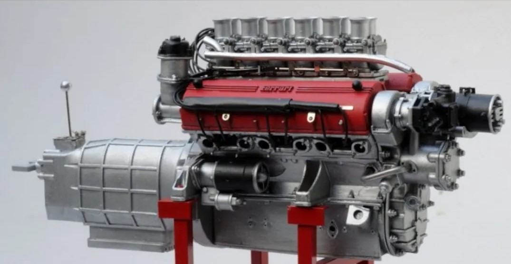

ARTICLE ABUOT FERRARI CAR.
Article on Ferrari Design
Ferrari and its elegant design, Ferrari cars have a large and wide front grille, divided into several sections to be able to improve the aerodynamics of the car, the headlights are designed horizontally towards the hood, and there are ventilation holes on both sides of the car, there is a rear spoiler designed with a sporty design, and the car wheels It is large in size, and under the bumper there are two fuel exhaust outlets. The design of the seats in the Ferrari is elegant and covered with a luxurious cover, the steering wheel in the modern Ferrari has been developed to keep pace with modern technology in the car, and the center console consists of three black control keys.
Ferrari car engine
The Ferrari engine has a 3.9-liter, eight-cylinder, 660-horsepower engine, and the car accelerates from zero to one hundred kilometers in three seconds, and the maximum speed of the car is 330 kilometers per hour.
ferrari car Features
The Ferrari features are its elegant desing,powerful engine and strong,shock-absorbing cabin